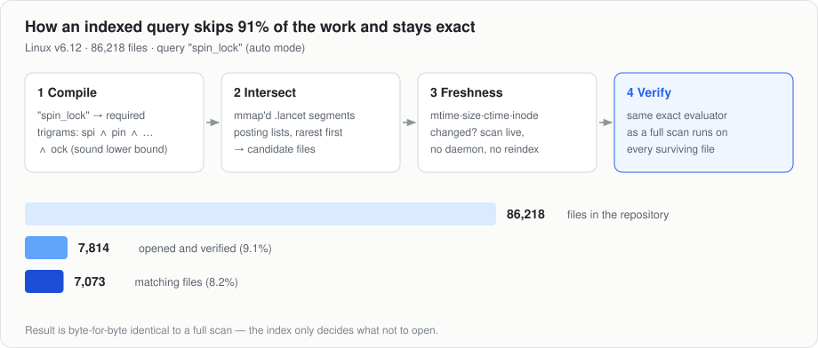
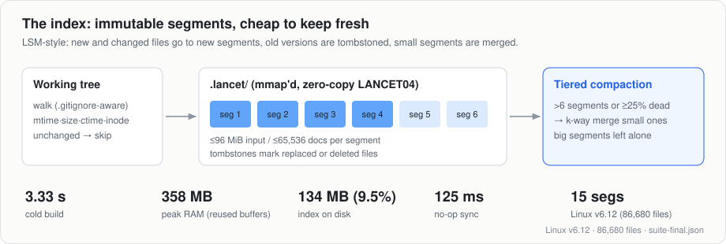

The LANCET04 Trigram LSM Index & Freshness Model
How Lancet achieves Scan == Auto without a background daemon — down to the 40-byte header and racy-timestamp guard.
Unlike search servers that rely on an asynchronous background watcher (lagging behind rapid agent edits) or serve stale cached lines, Lancet uses a daemonless, immutable LSM trigram index (LANCET04) designed around one invariant: Scan == Auto.

"spin_lock" in auto mode: 7,814 opened (9.1%), 7,073 matches (8.2%).Sound Trigram Lowering#
Queries are compiled into required byte-trigram boolean trees (literals, regex HIR branches, AST literals, refs --rank glob literals) or a sound q-gram count threshold AtLeast(k) for fuzzy(). Any file missing those trigrams cannot possibly satisfy the predicate, so skipping it produces zero false negatives. Every remaining candidate goes through the exact full-scan evaluator.
On-Disk LANCET04 Format & Zero-Copy mmap#
Located in PATH/.lancet (discovered up ancestor directories automatically unless --index-dir is set), consisting of manifest.json and immutable zero-copy segments (seg-NNNNNN.wseg):
header (40 B): "LANCET04" | ndocs:u32 | nkeys:u32 | doc_offs_off:u64 | keys_off:u64 | post_off:u64
doc_offs: (ndocs + 1) * u32 offsets relative to docs_off
docs: per doc (sorted by rel UTF-8): mtime_ns:u64 | size:u64 | ctime_ns:u64 | ino:u64 | flags:u8 | rel_utf8
keys: nkeys * (key:u32 | off:u32) + sentinel_end_off:u32 (sorted by trigram key)
postings: varint(count) followed by delta-varint doc IDsSegment::open checks only the 40-byte header — O(1) with zero heap allocations regardless of corpus size. Per-doc flags track FLAG_BINARY(1), FLAG_ERROR(2), FLAG_OVERSIZE(4, > 64 MiB — streamed via mmap at query time), and FLAG_RACY(8).
4-Tuple Metadata + Racy-Timestamp Guard#

Why is (mtime, size) alone broken? Tools like cp -p, tar, or same-length replacements can leave both mtime and size unchanged. On POSIX, Lancet tracks (mtime_ns, size, ctime_ns, ino) and applies Git's racy-timestamp window:
- Adaptive racy window: inspects up to 4,096 files for sub-second timestamps; uses
100 mson fine-grained filesystems (APFS, ext4, NTFS) and2 son coarse filesystems (HFS+, ext3, FAT). Any file touched inside that window getsFLAG_RACYand is never trusted from cache without live verification.
Rust's stdlib exposes only mtime and size stably on Windows (ctime_ns and ino are 0). On Windows, edits preserving both byte length and mtime require lancet index or --no-index.
Modes, Incremental Sync & Compaction#
auto(default): live metadata walk (~100 ms / 87k files) + stale files scanned live. Always exact.--trust-index: skips metadata walk and answers strictly from.lancet(~40 ms on Linux kernel, 2–3 ms no-hit); misses unindexed edits untillancet indexruns.--no-index: bypasses.lancetand scans disk directly.- LSM compaction: incremental
lancet indexupdates append a segment and tombstones atomically viamanifest.json.tmprename; automatic compaction triggers aboveCOMPACT_MAX_SEGMENTS = 6orCOMPACT_MIN_DEAD = 32dead docs (or manually vialancet index --compact/--rebuild).